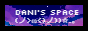

DANI's SPACE
w<'>Neko
Please read this first!
This website is a completely personal thing, with some music, a library of toki pona things, and other bits and pieces of random stuff that i find interesting. if you came to this website for a reason, i dont really know why, but welcome :)
If you stumbled upon this site, you can totally go into inspect and copy the code to use as a basis for your site; i believe that everyone should have their own little corner on the internet! also its a fairly simple site too
Some tools in the nav bar are from other websites, i just found them fun and useful!
Check the links in the sidebar to navigate around! :P
- Cat Ipsum -
Rub my belly, hiss, swipe at owner's legs, sniff, catnip and act crazy! growl at dogs in my sleep, sit on the laptop, hiss at vacuum cleaner. i like to spend my days sleeping and eating fishes that my human fished for me.
Head nudges eat my own ears. Hey! you there, with the hands, why can't i catch that stupid red dot, shed everywhere shed everywhere, stretching, attack your ankles, chase the red dot, hairbal,l run, catni,p eat the grass, sniff, or roll over and sun my belly. curl up and sleep on the freshly laundered towels.